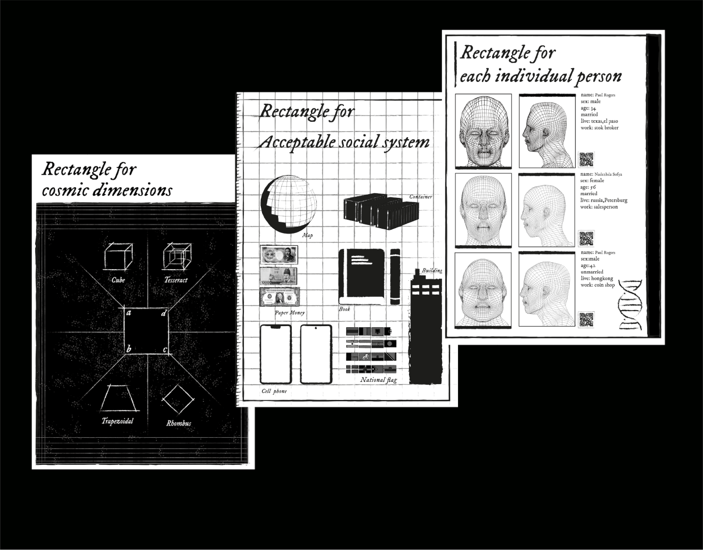
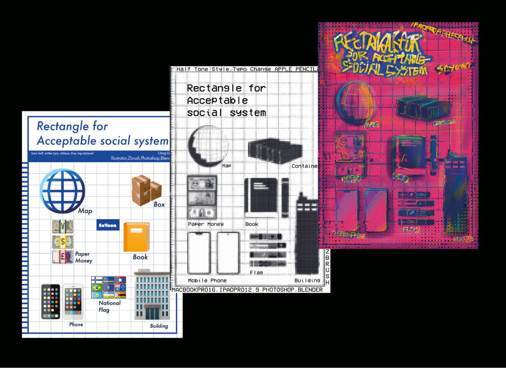
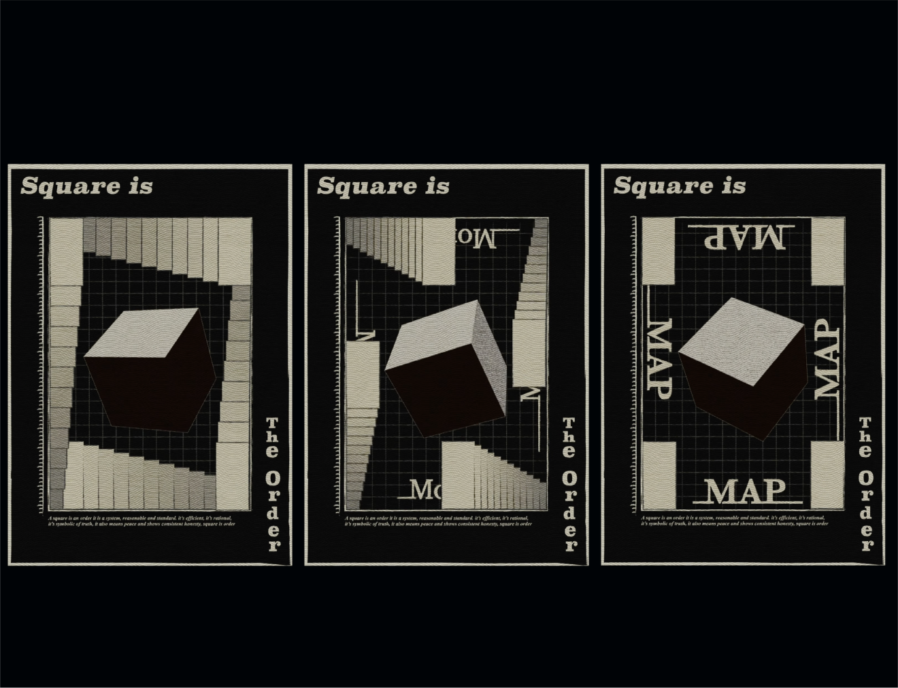

Project
Contact
@syn.jpg
Designer
Shape Research
정세윤
사각형 리서치
Category
Shape Poster1 / Shape Poster2 / Shape Poster3
사각형의 기본도형을 사회,예술, 문화적 관점으로 리서치해 다양한 포스터로 만들었다.
RECTANGLE FOR...
RECTANGLE SYSTEM
ORDER : SQUARE
Poster
Poster
Moving Poster
우주,사회,개인을 주제로 거시에서 미시적 관점으로 사각형을 리서치해 포스터로 표현했다.
첫번째 과제에서 선택한 포스터의 디자인 요소를 다양한 방법으로 변주하였다.
질서를 상징하는 사각형을 무빙포스터로 표현하였다.


